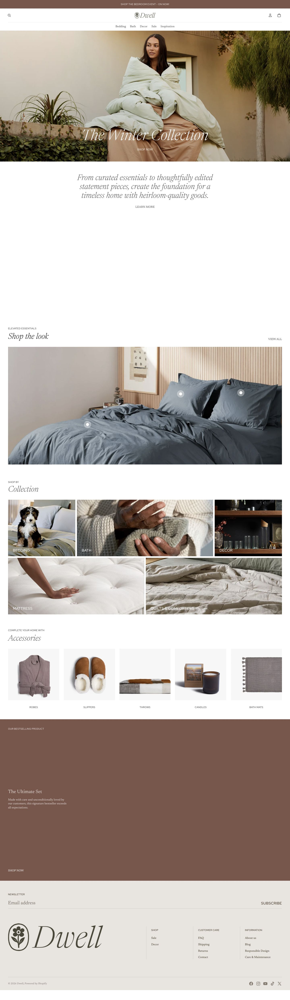
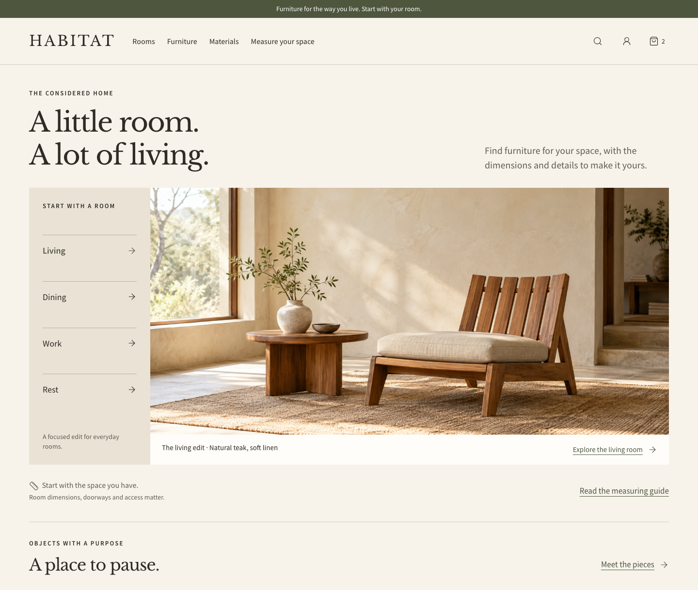
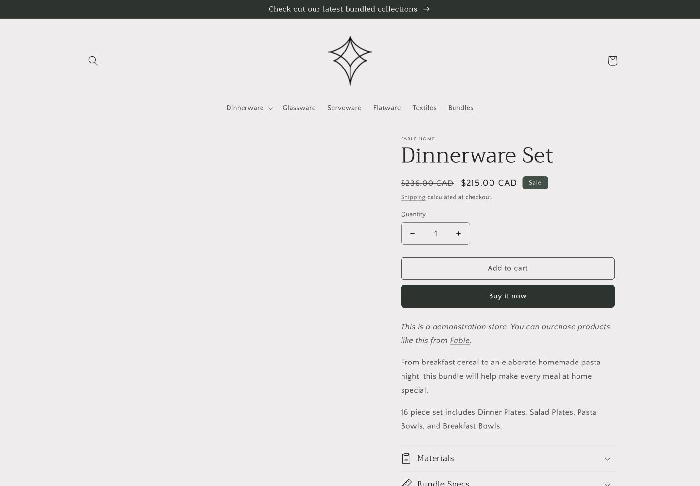
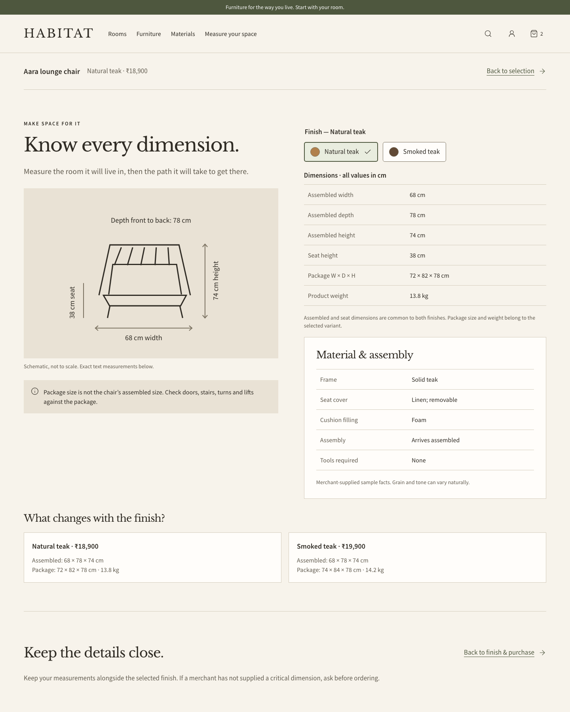

These saved Shopify captures are research evidence, separated from original Habitat theme assets. Both panels originate at 1440 CSS px and are shown at equal display widths with opening crops; full-page image heights differ. They are neither cloned page layouts nor evidence of better conversion.
Reference viewport: 1440×1000 · DPR 1 · Saved research 22 Oct 2026 · Opening excerpts
Saved public capture: room-oriented lifestyle opening, quiet serif hierarchy and home-category navigation. The dossier records vertical collection filters.

An explicit room index sits beside the panorama. Numeric dimensions and a measurement-guide entry address space and access uncertainty.

| User problem | Can I judge this object in my room and understand the facts before I purchase? |
|---|---|
| Convention retained | Room/category entry, material context and large lifestyle imagery. |
| Original departure | An explicit room index sits beside the panorama. Numeric dimensions and a measurement-guide entry address space and access uncertainty. |
| Required LetBuyy contract | A category/navigation; C typed dimensions and public Liquid facts; A/D actual service policy and quote. |
Reference viewport: 1440×1000 · DPR 1 · Saved research 22 Oct 2026 · Opening excerpts
Saved public product capture: Dinnerware Set gallery and a conventional purchase rail, with material/care and set contents in supporting detail. Successful purchase was not tested.

Furniture adds assembled versus package dimensions, seat height and an accessible dimension schematic. Finish identity selects only variant-specific facts while common measurements stay stable.

| User problem | Can I judge this object in my room and understand the facts before I purchase? |
|---|---|
| Convention retained | Material and care information remains near product evaluation. |
| Original departure | Furniture adds assembled versus package dimensions, seat height and an accessible dimension schematic. Finish identity selects only variant-specific facts while common measurements stay stable. |
| Required LetBuyy contract | C dimension namespace, unit normalization and variant inheritance; A/C sanitized merchant material/assembly facts. |
Official listing text was rechecked via web on 22 Oct 2026: Dwell and Craft. The listing documents merchandising intent; it does not prove current demo behavior. Remote Shopify pages were not modified. Reference photography is not used inside Habitat scenes.
Observed states come from the saved dossiers. Design differences and user-problem statements are expert proposals. Mobile menu/cart entry were recorded in those dossiers; successful mutation, payment, complete keyboard behavior and arbitrary loading states were not established.